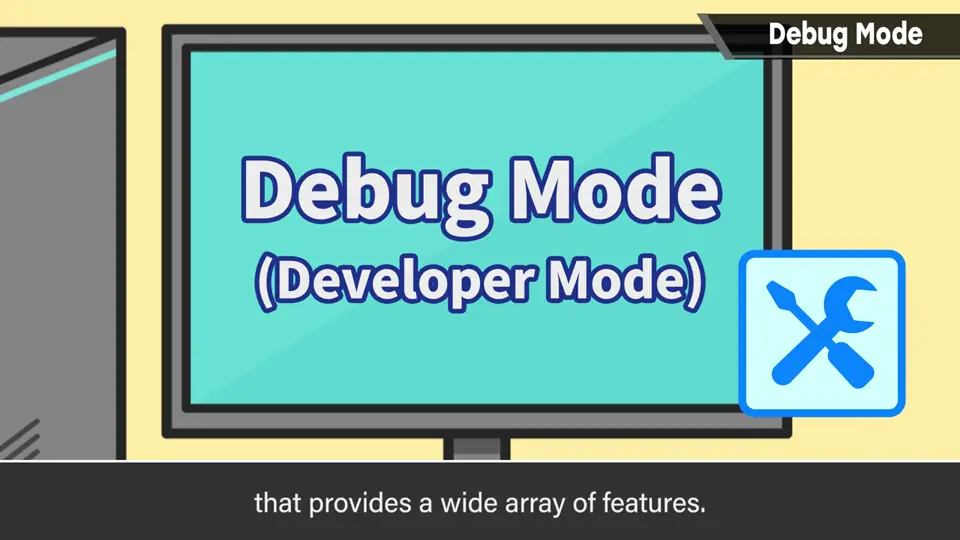
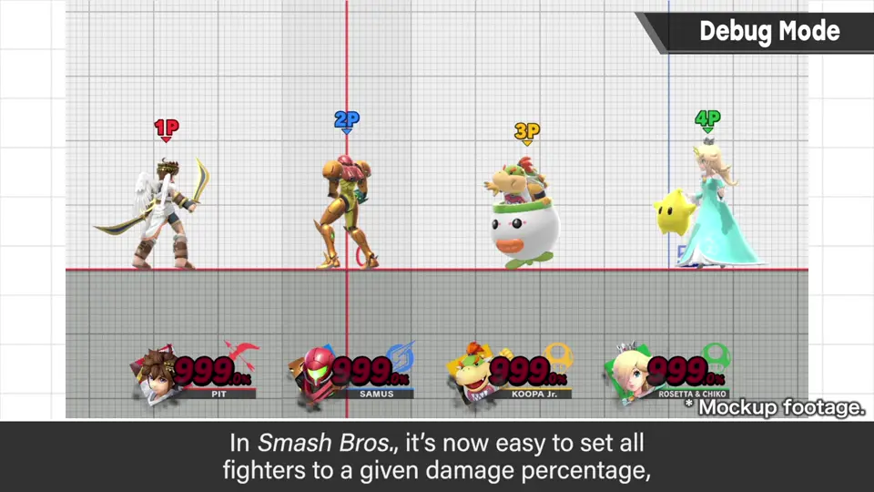
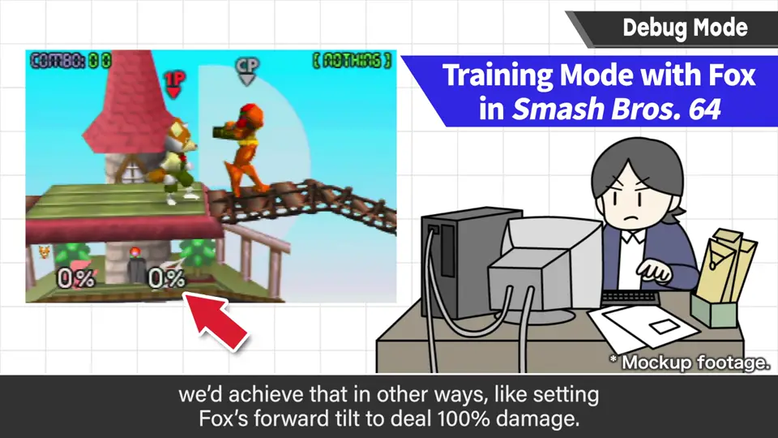
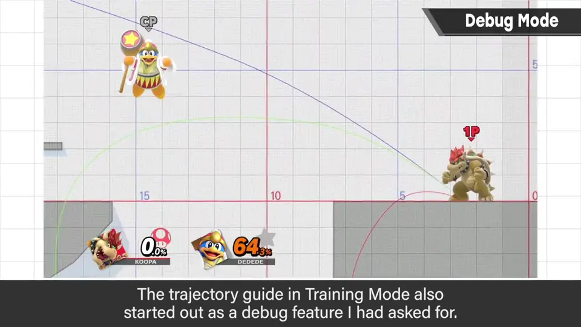
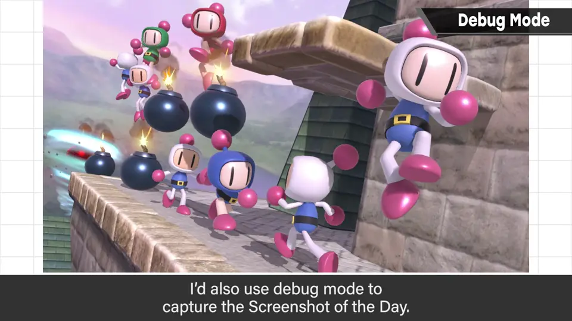
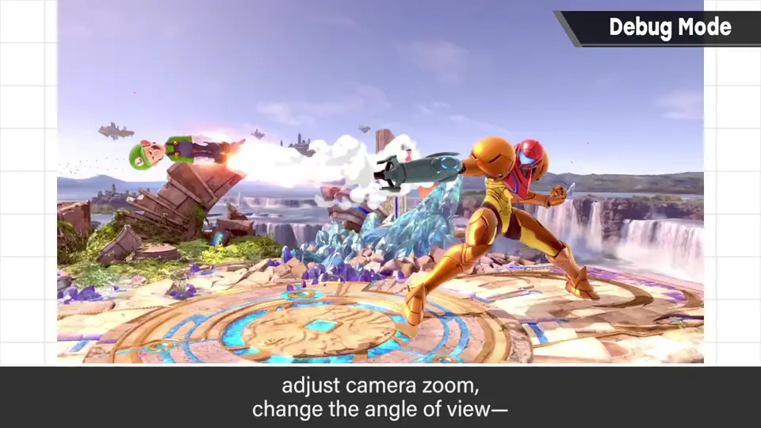
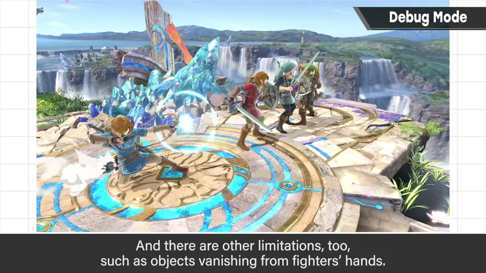
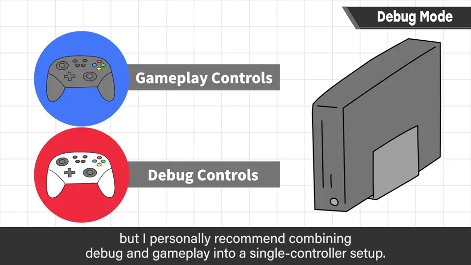
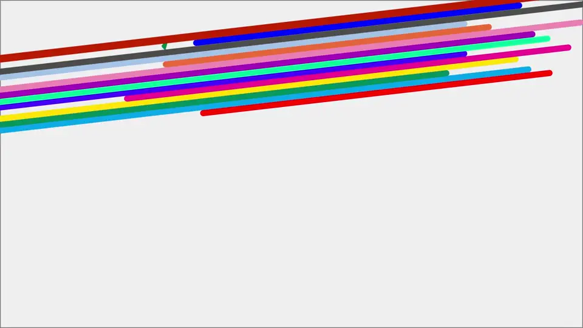

速览
没法展示具体画面，说明可能稍弱。开发中有调试模式（或开发模式），有各种功能，是开发中做各种确认的模式；功能太多、分支太多，一言难尽，但用它能边做各种测试和分析边做游戏。《大乱斗》可以直接把所有人的体力（伤害）设为指定数值；没有这功能的从前，是把狐狸的横强攻击力设为 100 来试。没有调试功能就需要花心思和手间。训练模式里的击飞轨迹显示原本也是做成调试功能的——有点像揭底，但好懂所以导入了。「今日一张」也是用调试模式拍的：画面静止、斗士替换、镜头拉远改视角等都很自由；不过不能把斗士放到画面前后景，手里拿的东西会消失，限制也不少——毕竟是开发模式。调试模式常设定另一个手柄来操作，但他个人推荐用平时那一个手柄就能完成的操作形式（按组合键等）——事后翻找另一个手柄非常麻烦。现在大多数调试模式在做成品时会整个拔掉，但许多开发者几乎每天使用，即使不进成品，这部分的便利对开发效率影响很大。项目容易变臃肿，要一边整理维护一边让进展更便利。
1. 什么是调试模式 0:04
没法展示具体画面，说明可能稍弱。开发中有「调试模式」或「开发模式」，拥有各种功能。

普通玩家可能也常听到「调试模式」这个叫法，它是游戏开发中做各种确认用的模式。功能太多、分支太多，一言难尽，但用它可以一边做各种测试和分析一边做游戏。
2. 没有调试功能时 0:40
《大乱斗》里，把所有人的体力设为指定数值是很平常的事。但在没有这功能的从前，是把狐狸横强攻击力设为 100 来测试。



训练模式中的击飞轨迹显示，原本也是作为调试功能请人做的。有点像揭底而在意，但很好懂，所以导入了。
3. 「今日一张」也是它拍的 1:13
「今日一张」也是用这个调试模式拍的：画面静止、替换斗士、镜头功能拉远或改视角等，都能自由自在。



但不能把斗士放在画面深处或前方；手上拿的东西会消失之类，限制也不少——毕竟是开发模式。
4. 建议：一个手柄完成 1:44
调试模式常设定另一个手柄来操作，但个人推荐用平时手上那一个手柄就能完成的操作形式（如分配到按键组合）。

5. 成品中拔掉，但影响效率 2:10
现在许多调试模式在做成品时会连功能一起拔掉，这应该是一般做法。

自测题
1. 没有「设定所有人伤害」的功能时，以前是怎么测试的？
把狐狸横强攻击力设为 100 来试。 0:50
2. 「今日一张」用调试模式拍有哪些限制？
不能把斗士放到画面深处或前方，手持物会消失等。 1:38
3. 樱井对调试操作的手柄有什么建议？为什么？
用平时的一个手柄（按键组合）就能完成；事后找另一个手柄很麻烦。 1:52